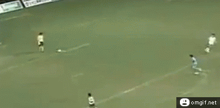
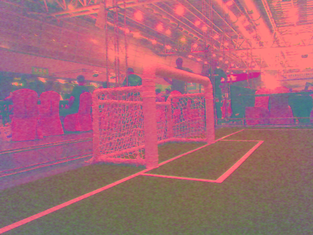

RoboCup
Einführung und Überblick
Poppinga & Poppinga

RoHOW
Wie sieht ein Roboter die Welt?

Regeln im Roboterfußball
Der Ball ist rund und das Spiel dauert 20 Minuten.
Vielen Dank für Ihre Aufmerksamkeit
www.rohow.de
www.hulks.de